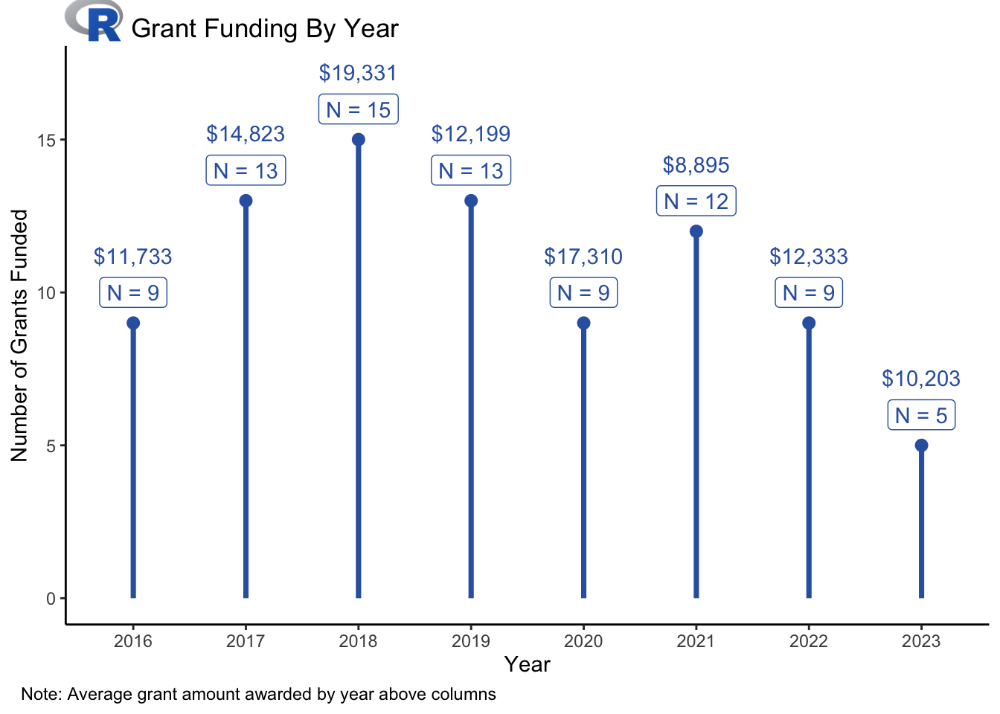

library(tidyverse)
library(geomtextpath)
data <- read.csv("data.csv")
plot_data <-data %>%
group_by(year) %>%
summarize(n = n(),
average = round(mean(funded),0),
total = average * n)
myurl = "https://www.r-project.org/logo/Rlogo.png"
R = tempfile()
download.file(myurl,R,mode="wb")
RImage = png::readPNG(R) %>%
grid::rasterGrob(interpolate = TRUE)
plot <- plot_data %>%
mutate(average = priceR::format_dollars(average),
year = as.factor(year)) %>%
ggplot(aes(x=year,y=n,label=average)) +
geom_point(aes(x=year,y=n),size = 2.5,color="#3363B0",show.legend = FALSE) +
# scale_fill_manual(values = rep(c("#3363B0","#ACADB1"),4)) +
ggplot2::geom_segment(aes(x=year,xend=year,y=0,yend=n),linewidth=1.25,color="#3363B0") +
geom_text(aes(x=year,y= n + 2.2),color="#3363B0",show.legend = FALSE) +
geom_label(aes(x=year,y= n + 1,label=glue::glue("N = {n}")),color="#3363B0") +
theme_classic() +
labs(title = "Grant Funding By Year",
x = "Year",
y = "Number of Grants Funded",
caption = "Note: Average grant amount awarded by year above columns") +
theme(plot.caption = element_text(hjust = -.10),
plot.title = element_text(hjust = .1,vjust = -.3)) +
coord_cartesian(clip = 'off') +
annotation_custom(RImage, x = -0.10, xmax = 1.40, y = 18.2, ymax = 19.7)
ggsave(filename = "Rgrant.png")Tidy Tuesday 2-27-24
Grants
R
TidyTuesday
A #TidyTuesday data visualization of R grant data
